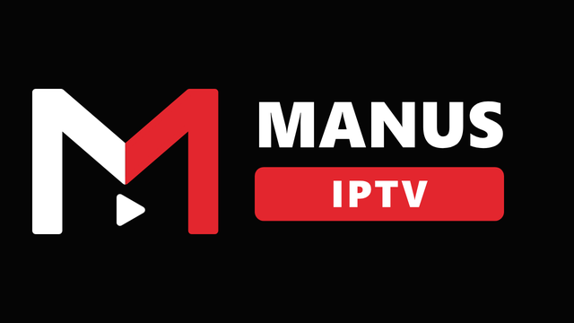

Manus IPTV
A fast, remote-friendly player for Android TV and Google TV. You add your own M3U playlist links; Manus IPTV turns them into a clean guide you can drive with the TV remote.
Manus IPTV does not include, host or provide any channels, streams or programme data. You are responsible for the playlists you add.
Features
- Add playlists by typing, or send the link from your phone by scanning a QR code (same Wi-Fi).
- Several playlists merged; duplicates folded into one channel with multiple versions.
- Guide by country, category and playlist; search; favourites; recently watched.
- Pause and rewind live streams where the stream allows it; automatic reconnect.
- Subtitles: an English track if present, otherwise translated on the TV (Google ML Kit).
- Built for the TV remote first. No account, no ads.